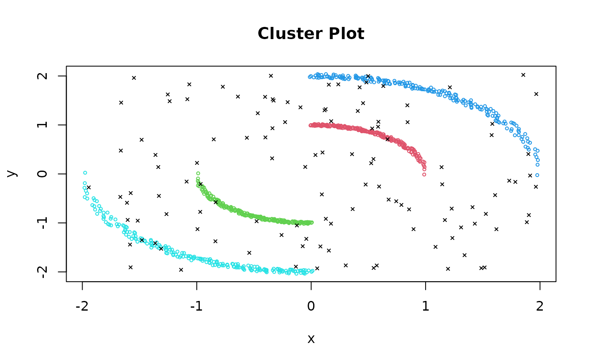
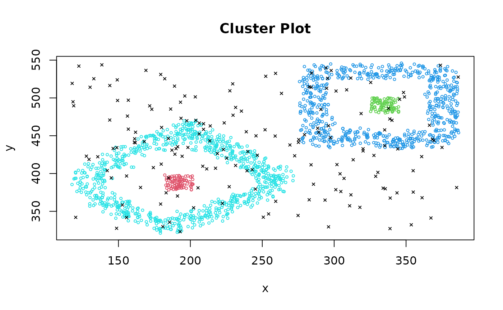
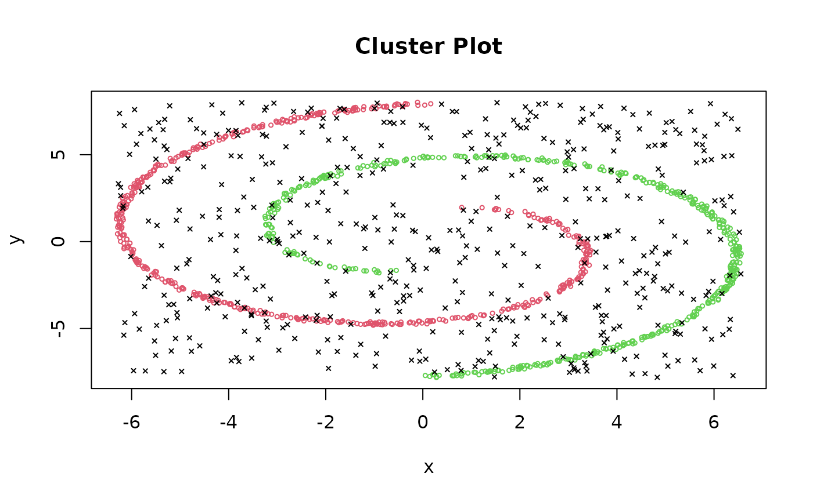
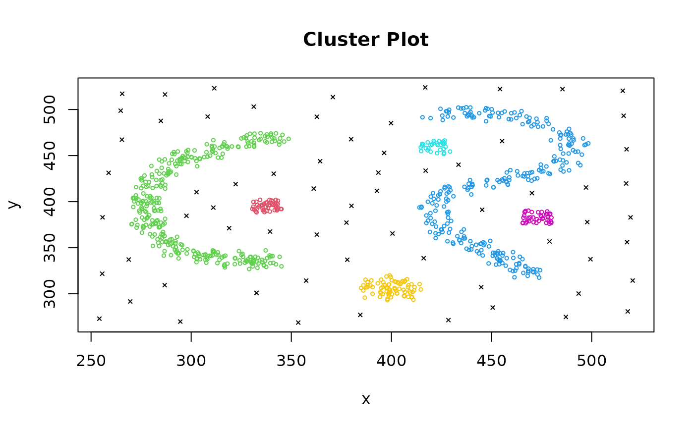

The four synthetic 2D datasets used in Moulavi et al (2014).
Format
Four data frames with the following 3 variables.
- x
a numeric vector
- y
a numeric vector
- class
an integer vector indicating the class label. 0 means noise.
References
Davoud Moulavi and Pablo A. Jaskowiak and Ricardo J. G. B. Campello and Arthur Zimek and Jörg Sander (2014). Density-Based Clustering Validation. In Proceedings of the 2014 SIAM International Conference on Data Mining, pages 839-847 doi:10.1137/1.9781611973440.96
Examples
data("Dataset_1")
clplot(Dataset_1[, c("x", "y")], cl = Dataset_1$class)

data("Dataset_2")
clplot(Dataset_2[, c("x", "y")], cl = Dataset_2$class)

data("Dataset_3")
clplot(Dataset_3[, c("x", "y")], cl = Dataset_3$class)

data("Dataset_4")
clplot(Dataset_4[, c("x", "y")], cl = Dataset_4$class)
